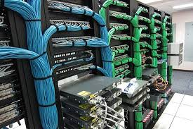

¿ CUAL ES EL PROCESO PARA EL DISEÑO DE UNA RED?

Un diagrama de red suele ser la pieza clave del proceso de diseño. Proporciona una representación visual de la red e integra información como las conexiones físicas; la cantidad, el tipo y la ubicación de todos los dispositivos y puntos finales; el direccionamiento IP; y los procesos y la arquitectura de seguridad. El software de diseño de redes puede ayudar creando un plano del sitio o la oficina para mapear las conexiones físicas.Al construir una red desde cero, el primer paso es compilar una lista de todos los activos, puntos finales, usuarios, dispositivos, redes LAN y demás elementos de la red. Los equipos de TI introducen esta información en la aplicación de diseño de red para crear la primera iteración de un diagrama de red.
Al diseñar para entornos de red existentes, el proceso integra la infraestructura existente que debe mantenerse o mantenerse en funcionamiento durante la producción y el despliegue de la nueva red. Los patrones de uso y flujos de trabajo existentes pueden orientar las nuevas jerarquías y topologías de red, que evolucionarán a medida que los equipos de seguridad, producto y experiencia de usuario colaboren en el diseño.